2
Under the Hood
The nice thing about the Arduino is that a lot of the time, you really do not need to know what goes on behind the scenes when you upload a sketch. However, as you get more into Arduino and want to push the envelope of what it can do, you need to find out a bit more about what’s going on behind the scenes.

A Brief History of Arduino
The first Arduino board was developed back in 2005 in Italy at the Interaction Design Institute at Ivrea near Turin. The intention was to design a low-cost and easy-to-use tool for design students to build interactive systems. The software behind Arduino, which is so much a part of Arduino’s success, is a fork of an open source framework called Wiring. Wiring was also created by a student at the Institute.
The Arduino fork of Wiring is still very close to Wiring, and the Arduino IDE is written in Wiring’s big brother that runs on PCs, Macs, and so on, and is called Processing. Processing is well worth a look if you have a project where your Arduino needs to talk to a PC over USB or Bluetooth.
The Arduino hardware has evolved over the years, but the current Arduino Uno and Leonardo boards retain the same basic shape and sockets as the original.
Anatomy of an Arduino
Figure 2-1 shows the anatomy of an Arduino Uno. The Leonardo is similar but has the USB interface integrated into the main microcontroller chip. The Due is also similar, but the processor is powered by 3.3V, not 5V.
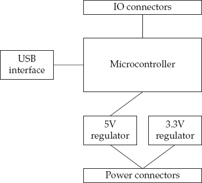
Figure 2-1 The anatomy of an Arduino Uno
In many ways, the Arduino is really little more than a microcontroller chip with some supporting components. In fact, it is perfectly possible to build an Arduino on breadboard using the processor chip and a few extra components or to create a PCB for a design that started out using an Arduino as a prototype. The Arduino boards make things easy, but ultimately any Arduino design can be converted into something that just uses the microcontroller chip and the few components that it really needs. For example, if the design is only for programming purposes, you may not need a USB interface, as you could program the chip on an Arduino and then transplant the programmed chip into an IC socket on a PCB or to breadboard.
Later, we’ll look at how Arduinos can be programmed directly using the ICSP (In Circuit Serial Programming) interface.
AVR Processors
The Arduino family of boards all use microcontrollers made by Atmel. They all have similar hardware design principals and, with the exception of the microcontroller used in the Due (SAM3X8E ARM Cortex-M3 CPU), they have similar designs.
ATmega328
The ATmega328 is the microcontroller used in the Arduino Uno and its predecessor the Duemilanove. In fact, the ATmega168 that was used in the first Arduino boards is basically an ATmega328 but with half of each type of memory.
Figure 2-2 shows the internals of an ATmega328, taken from its datasheet. The full datasheet is available from www.atmel.com/Images/doc8161.pdf and is worth browsing through to learn more about the inner workings of this device.
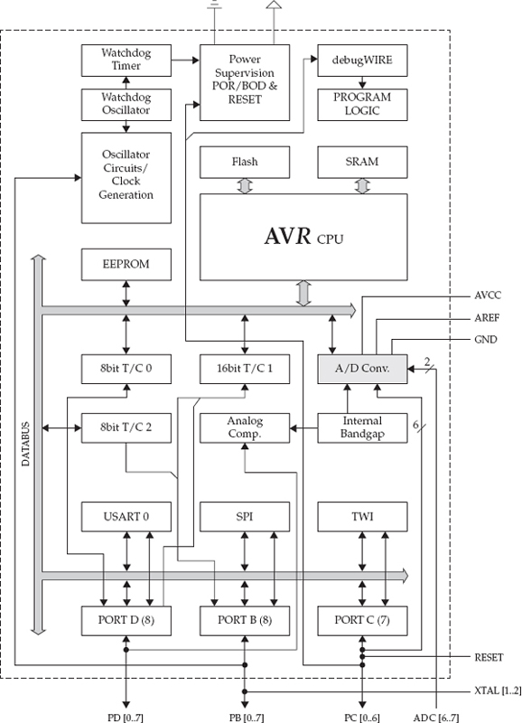
Figure 2-2 The ATmega328
The central processing unit (CPU) is where all the action takes place. The CPU reads instructions (compiled sketch code) from the flash memory one instruction at a time. This process is different from a conventional computer where programs are stored on disk and loaded into random access memory (RAM) before they can be run. Variables that you use in your programs are stored separately in the static RAM (SRAM). Unlike the flash memory containing the program code, the RAM is volatile and loses its contents when you turn off the power.
To allow the nonvolatile storage of data that remains even after the device is powered off, a third type of memory called Electrically Erasable Programmable Read Only Memory (EEPROM) is used.
Another area of interest is the Watchdog Timer and Power Supervision unit. These give the microcontroller the capability to do a number of things that are normally hidden by the simplified Arduino layer, including clever tricks like putting the chip to sleep and then setting a timer to wake it up periodically. This trick can be very useful in low current applications, and you can read more on this in Chapter 5.
The remainder of the block diagram is concerned with the analog-to-digital conversion, the input/output ports, and the three types of serial interfaces supported by the chip: UART - Serial, SPI, and TWI (I2C).
ATmega32u4
The ATmega32u4 is used in the Arduino Leonardo and also in the LilyPad USB and the Arduinos Micro and Nano. This processor is similar to the ATmega328, but it is a more modern chip with a few enhancements over the ATmega328:
• A built-in USB interface, so there’s no need for extra USB hardware.
• More of the pins are PWM capable.
• There are two serial ports.
• Dedicated pins for I2C (these pins are shared with the analog pins on the Arduino).
• There is 0.5kB more SRAM.
The version used in the Leonardo is in a surface-mount package, which means it is soldered directly to the Arduino board, whereas the ATmega328 is in a DIL package fitted into an IC socket for the Arduino Uno.
ATmega2560
The ATmega2560 is used in the Arduino Mega 2560 and the Arduino Mega ADK. It is no faster than the other ATmega chips, but it does have far more of every type of memory (256k flash, 8k SRAM, and 4k of EEPROM) and many more I/O pins.
AT91SAM3X8E
This is the chip at the heart of the Arduino Due. It is much faster than the ATmega chips I have discussed so far, being clocked at 84 MHz, rather than the normal 16 MHz of the ATmegas. It has 512k of flash and 96KB of SRAM. The microcontroller does not have any EEPROM. Instead, to save persistent data, you need to provide your own additional hardware, either in the form of an SD card holder and SD card or flash or EEPROM storage ICs. The chip itself has many advanced features including two analog outputs that make it ideal for sound generation.
Arduino and Wiring
The Wiring library gives Arduino its easy-to-use functions for controlling the hardware pins; however, the main structural part of the language is all provided by C.
Until recently, if you looked in your Arduino installation directory, you could still find a file called WProgram.h (Wiring Program). This file has now been replaced by a similar file called Arduino.h that indicates the gradual drift of the Arduino fork away from the original Wiring Project.
If you go to your Arduino installation folder, you’ll find a folder called “hardware,” and within that, a folder called “arduino,” and within that, a folder called “cores.” Note that if you are using a Mac, then you can only get to this folder by right-clicking on your Arduino application, selecting View Package Contents from the menu, and then navigating to the Resources/Java/ folder.
Inside the cores folder is another folder called “arduino,” and, in there, you will find a whole load of C header files with the file extension .h and C++ implementation files with the extension .cpp (Figure 2-3).
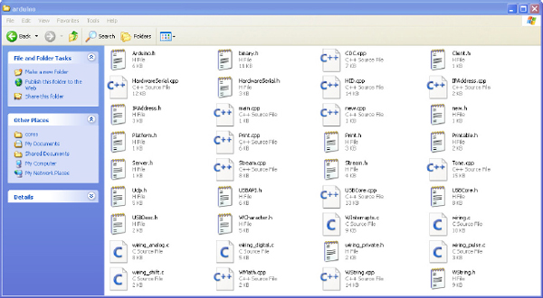
Figure 2-3 Inside the cores folder
If you open Arduino.h in an editor, you’ll discover that it consists of many #include statements. These pull in definitions from other header files within the cores/arduino folder, so they are included during compilation (converting the sketch into a form suitable for installing into the microcontroller’s flash memory).
You’ll also find constant definitions like this:
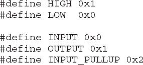
You can think of these as being a bit like variables, so the name HIGH is given the value 1. The value is specified as 0x1 rather than just 1 because the values are all specified in hexadecimal (number base 16). These are not actually variable definitions; they are called C precompiler directives, which means that while your sketch is being turned into something that can be installed into the flash memory on the microcontroller, any instances of the words HIGH, LOW, and so on, are automatically converted into the appropriate number. This has an advantage over using variables in that no memory has to be reserved for their use.
Because these constants are numbers, you could write something like this in your sketch to set pin 5 to be an OUTPUT, but it is better to use the name in case the Arduino developers ever decide to change the constant’s value. Using a name also makes the code easier to read.
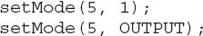
Also, within arduino.h, you’ll find lots of function “signatures” like this:
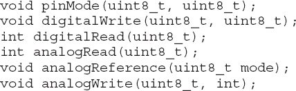
These warn the compiler about functions whose actual implementations are to be found elsewhere. Take the first one as an example. It specifies the function pinMode as taking two arguments (that you know to be pin number and mode) that are specified as having a type of uint8_t. The void command means the function will not return a value when it is called.
You might be wondering why these parameters’ type is specified as uint8_t rather than int. Normally when defining which pin to use, you specify an int. In actual fact, int is a universal type when writing sketches. It means users do not need to worry about a large number of possible types that they might have to use. But in Arduino C, an int is actually a 16-bit signed number that can represent a number between –32,768 and 32,767. However, when specifying a pin to use, having negative pin numbers doesn’t make sense and you are very unlikely to ever get a 32,767-pin Arduino.
The type uint_8 is a much more precise convention for defining types because an int in C can be anything between 16 and 64 bits, depending on the C implementation. The way to read “uint_8” is that the u is for unsigned, then you have int, and, finally, after the _ you have the number of bits. So uint_8 is an unsigned 8-bit integer that can represent a number between 0 and 255.
You can use these well-defined types within your sketches, and, indeed, some people do. You have to remember, however, that this makes your code a little less accessible to those who aren’t as experienced in Arduino programming.
The reason that using a regular signed 16-bit int works, rather than, say, a unit_8, is that the compiler automatically performs the conversion for you. Using int variables for pin numbers actually wastes memory. However, you have to balance this against the simplicity and readability of the code. Generally, in programming it’s better to favor easy-to-read code over minimizing memory usage, unless you know you are doing something complex that is going to push the microcontroller’s limits.
It’s a bit like having a truck in which you want to deliver some goods to someone. If you have a load of stuff to deliver, then you need to think carefully about how to pack the load so it all fits. If you know that you are only going to use one little corner of the available space, then spending a lot of time minimizing the space it takes is simply unnecessary.
Also within the arduino folder, you’ll find a file called main.cpp. Open this file; you’ll find it pretty interesting.
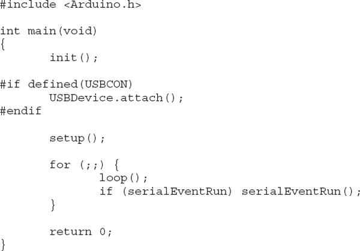
If you have done any C, C++, or Java programming before, you are familiar with the concept of a main function. This function runs automatically when the program is run. Main is the starting point for the whole program. This is also true of Arduino programs, but it is hidden from the sketch writer, who is instead told to implement two functions—setup and loop—within their sketch.
If you look carefully at main.cpp, ignoring the first few lines for now, you can see that it actually calls setup() and then has a for loop with no conditions, with the loop function called inside the loop.
The command for(;;) is simply an ugly way of writing while (true). Notice that in addition to running the loop function, there is also an if command inside the for that checks for serial messages and services them if they arise.
Returning to the top of main.cpp, you can see that the first line is an include command that pulls in all the definitions in the header file arduino.h that I mentioned previously.
Next, you see the start of the definition of the main function, which begins by invoking an init() function. If you look, you can find what this does in the file wiring.c; it in turn calls a function sei, which enables interrupts.
These lines
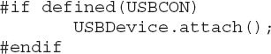
are another example of a C preprocessor directive. This code is a bit like an if command that you might use in your sketch, but the decision in the if is not made when the sketch is actually running on the Arduino. The #if is evaluated as the sketch is being compiled. This directive is a great way to switch chunks in and out of the build, depending on whether they are needed for a particular type of board. In this case, if the Arduino supports USB, then include the code for attaching the USB (initialize it); otherwise, there is no point in even compiling the code to do that.
From Sketch to Arduino
Now that you have a basic understanding of where all the magic code comes from when you write a simple Arduino sketch, let’s look at exactly how that code gets into the flash memory of an Arduino board’s microcontroller when you click the Upload button in the Arduino IDE.
Figure 2-4 shows what happens when you click the Upload button.
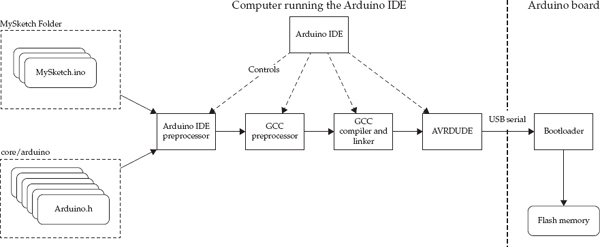
Figure 2-4 The Arduino toolchain
Arduino sketches are held in a text file with the .ino extension, in a folder of the same name but without the extension.
What actually happens is that the Arduino IDE controls a number of utility programs that do all the actual work. First, a part of the Arduino IDE that (for want of a better name), I have named the Arduino IDE preprocessor assembles the files provided as part of the sketch. Note that normally only one file is in the sketch folder; however, you can place other files in the folder if you wish, but you need to use a separate editor to create them.
If you have other files in the folder, they will be included in this build process. C and C++ files are compiled separately. A line to include arduino.h is added to the top of the main sketch file.
As there are many different types of Arduino boards that use different microcontroller chips that have different pin names, the Arduino IDE must use the right pin definitions for the board. If you look in the hard-ware/arduino/variants folder, you’ll find a folder for each type of Arduino board, and inside each folder, you’ll see a file called pins_arduino.h. This file contains constants for the pin names for that platform.
When everything has been combined, the next step is to invoke the GCC compiler. This compiler is an open source C++ compiler that is bundled as part of the Arduino distribution. It takes the sketch, header, and C implementation source code files and converts them into something that can be run on an Arduino. It does this in a number of steps:
1. The preprocessor interprets all the #if and #define commands and determines what actually goes into the build.
2. Next, the code is compiled and linked into a single executable file for the type of processor used by the board.
3. After the compiler has finished its work, another piece of open source software called avrdude actually sends the executable code, saved as a hexadecimal representation of the binary, to the board over the USB serial interface.
We are now in the Arduino’s realm. The Arduino has a small resident program installed on every microcontroller that is included with its board. This program is called a bootloader. The bootloader actually runs very briefly every time an Arduino is reset. This is why when serial communication starts to an Arduino Uno, the hardware serial link forces a reset to give the bootloader chance to check for any incoming sketches.
If there is a sketch, then the Arduino effectively programs itself by unpacking the hexadecimal representation of the program into binary. It then stores the sketch in the flash memory. The next time that the Arduino restarts, after the usual bootloader check for a new sketch, the program that was stored in flash is automatically run.
You might wonder why the host computer cannot program the microcontroller directly rather than taking this convoluted path. The reason is that programming a microcontroller requires special hardware that uses a different interface to the Arduino board (ever wondered what the little six-pin header was for?). By using a bootloader that can listen on a serial port, you can program the Arduino though USB without having to use special programming hardware.
However, if you do have such a programmer, such as the AVRISPv2, AVRDragon, or the USBtinyISP, then you can program the Arduino directly through such a programmer, bypassing the bootloader entirely. In fact, as you shall see later in this chapter, you can also use a second Arduino as a programmer.
AVR Studio
Certain hard-bitten electronic engineers can be a bit snotty about Arduino. They might tell you that it doesn’t have any technical advantages over using the tools provided by Atmel for programming the whole family of AVR microcontrollers. While technically true, this misses the point of Arduino, which is to demystify the whole process of using a microcontroller and to wrestle it from the control of such experts. This does mean that some of the things us Arduino aficionados do could be considered a bit amateurish, but I say so what!
AVR Studio is the manufacturer’s proprietary software for programming the microcontrollers used in Arduinos. You can use it to program the Arduino itself, rather than using the Arduino IDE. If you do, however, you will have to accept the following:
• A Windows-only environment
• Using a hardware programmer rather than USB
• A more complex environment
Perhaps this is the point at which you might want to consider why you might want to do this. Here are some good reasons:
• You want to get rid of the bootloader (it uses 500 bytes on a Uno) because either you are short of flash memory or you want a quicker start after reset.
• You want to target other microcontrollers than those used in standard Arduinos, such as the less expensive and smaller ATtiny family.
• You just want to learn something new.
The Arduino boards all come with a six-pin header that can be used to program the Arduino directly using AVR Studio. In fact, some boards come with two six-pin headers: one for the main processor and one for the USB interface, so be careful to connect to the right one.
Figure 2-5 shows AVR Studio 4 in action.
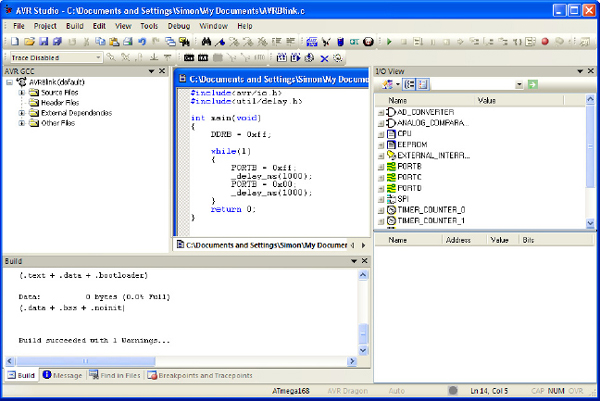
Figure 2-5 AVR Studio
It is beyond the scope of this book to teach AVR Studio. However, as you can see from Figure 2-5, the Blink sketch does not get any longer, but it certainly looks more complicated! It will also compile into a tiny amount of flash memory compared with its Arduino counterpart.
Figure 2-6 shows an Arduino connected to an AVR Dragon programmer. This programmer is particularly powerful and flexible, and it allows you to debug and single-step through programs actually running on the ATmega chip.
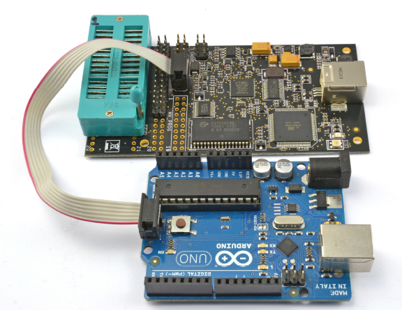
Figure 2-6 An Arduino connected to an AVR Dragon programmer
In Chapter 4, we look at the kind of direct port manipulation that is going on in Figure 2-5 as a way to improve I/O performance without having to abandon the Arduino IDE.
Installing a Bootloader
You might want to install the Arduino bootloader onto an Arduino board for several reasons. You may have damaged the removable ATmega328 on an Arduino Uno and be replacing the chip with a new ATmega328 (bought without the bootloader). Alternatively, you may be moving an Arduino prototype off-board, by taking the ATmega328 off the Arduino board and fitting it to a custom board of your own design.
Whatever the reason, you can add a bootloader to a blank ATmega328, either by using one of the programmers mentioned in the previous section or by using one Arduino to program a second.
Burning a Bootloader with AVR Studio and a Programmer
The Arduino installation folder contains bootloader hex files that can be flashed onto an ATmega328 using AVR Studio. You will find these files in the hardware/arduino/bootloaders folder. There, you will find hex files for all sorts of different hardware. If want to install a bootloader for an Uno, use the optiboot_atmega328.hex file in the optiboot folder (Figure 2-7).
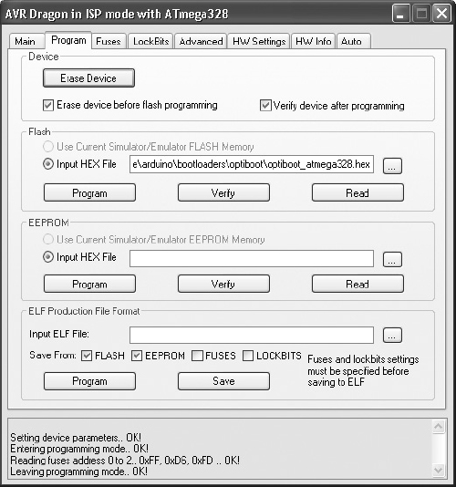
Figure 2-7 Burning an Uno bootloader in AVR Studio 4
First, a word of warning. If you are going to try this, then be aware that there is a chance you will “brick” your processor chip. These chips have what are called “fuses” that can be set and sometimes cannot be reset. They are designed this way for proprietary reasons, when you want to prevent reprogramming for commercial reasons. Check carefully that the fuses are set correctly for the Arduino board you are programming before you take the plunge, and accept that you may incur a loss. The Arduino forum at www.arduino.cc/forum includes many threads on this topic, along with “gotchas” to avoid.
To burn the bootloader using AVR Studio and an AVR Dragon, connect the programmer to the Arduino ISP header pins (see Figure 2-6 earlier in the chapter). Note that an Arduino Uno actually has two sets of ISP header pins; the other sets are for flashing the USB interface.
From the Tools menu, select the Program AVR option and then connect to the ATmega328 on the Arduino. Then in the Flash section, browse to the correct hex file and then click Program.
Burning a Bootloader with the Arduino IDE and a Second Arduino
Flashing one Arduino with a new bootloader from another Arduino is remarkably easy. It is certainly easier and less risky than using AVR Studio. The Arduino IDE includes an option to do this. Here’s all you need to get started:
• Two Arduino Unos
• Six male-to-male jumper leads (or solid core wire)
• One short length of solid core wire
• A 10µF 10V (100µF will also work) capacitor
You first need to make the connections listed in Table 2-1.
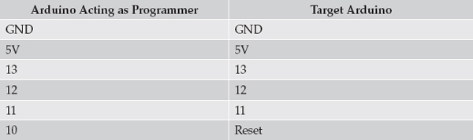
Table 2-1 Arduino to Arduino Programming Connections
You also need to attach a 10µF capacitor between Reset and GND on the target Arduino (the one being programmed). The capacitor will have a longer positive lead, which should go to Reset.
Figure 2-8 shows the connected Arduinos. The Arduino on the right of Figure 2-8 is the one doing the programming. Notice how solid-core wire is used for the connection between pin 10 on the programming Arduino and Reset on the target Arduino. This is so that both the wire and the positive lead of the capacitor will fit in the Reset socket.
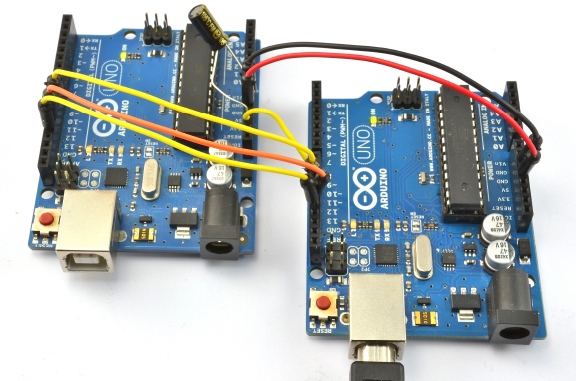
Figure 2-8 Arduino to Arduino Flashing
Note that the Arduino doing the programming powers the Arduino being programmed, so only the programming Arduino needs to be connected to your computer by USB.
The Arduino that is going to do the programming needs to have a sketch installed on it. You will find this under File | Examples. The sketch is called ArduinoISP and is in the top section of the Examples.
Select the board type and port in the usual way and upload the ArduinoISP sketch onto the Arduino doing the programming. Now from the Tools menu, select the Programmer submenu and select the Arduino as ISP option.
Finally, select the Burn Bootloader option from the Tools menu. The process takes a minute or two, during which the Rx and Tx LEDs should flicker on the programming Arduino and the “L” LED flicker on the target Arduino.
When the process finishes, that’s it—the microcontroller on the target Arduino has a new bootloader installed.
Summary
In this chapter, we looked more closely at what exactly the Arduino is and how it works. In particular, I showed you what is hidden by the Arduino environment.
In the next chapter, we look at using interrupts and at how to make the Arduino respond to external timer-triggered events using interrupts.